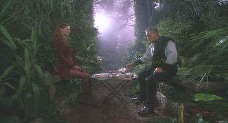

It’s hard to recommend anything about The
Avengers, a banal movie taken from a clever television series. The crisp, wry
situations of the 60s television series simply fail to develop in this inane screenplay.
Inspired casting may have saved the film from disaster, but while the paper appeal of the
players seems foolproof, the result is foolhardy. Uma Thurman lacks the sophistication of
a Diana Rigg who played Emma Peel on television. And the costume designer didn’t help
much either. Uma fails to ignite the hot breath of potential young male audience. Ralph
Fiennes is another matter altogether. He fails to muster any energy as John Steed.
It’s rather the reverse when he rattles off his pithy comments. Sean Connery would
have made the better Steed. Instead he’s locked in a preposterous villain’s
cloak playing a mad Scot bent on blackmailing the world through devious control of the
weather. Connery and the production design are the most appealing aspects of The
Avengers.
 |
A spot of tea in the hot house©Warner |
At least the DVD is
outstanding. The anamorphic images are delivered with consummate style, almost emphasizing
the lack of style in the film itself. Contrast ratios offer an incredible range making
powerful DVD pictures. The Avengers is a very sharp DVD. Edge to edge detail is
rendered impeccably. Color is outstanding, tightly controlled with no overlap fringing.
Great sound on The Avengers too delivered in wide stage Dolby Digital 5:1 mix. Bass
extension is crisp, dialogue icy clear. |